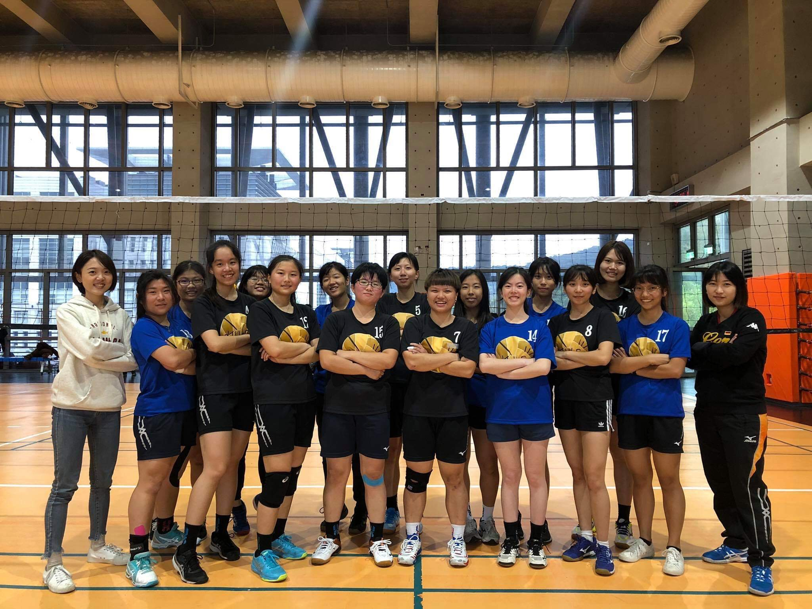

Extracurricular Activities
課外活動
Kendo Club
劍道社
First meet kendo when I'm in grade 10, since then, I have been fond to this sport.
I joined the kendo club of our school two years ago, practicing hard and meet lots people.
It is really nice to know that there are also people
who is interested in the thing that you like it so much.
第一次接觸劍道是在高中一年級的時候，從此便愛上了這項運動。
在大一入學後，加入了目前學校的劍道社。在社團的練習與出去和他校比賽的過程中，遇到了很多各式各樣的人。
在枯燥的練習與對遙遠目標的追求路上，知道自己還有許多夥伴陪伴著、大家都在朝著同一個目標前進的感覺， 真的感到非常幸福。
Competition Experiences
比賽經驗
107學年度大專盃
107學年度桃園市議長盃
107學年度劍道學生錦標賽
107學年度輔大盃
107學年度大專盃邀請賽
108學年度北市中正盃
108學年度全國中正盃
109學年度北市中正盃
109學年度全國中正盃
109學年度大專盃
109學年度學生劍道錦標賽
Cadre of Club
幹部職務
108學年度 社團/校隊總務
109學年度 校隊女副隊長

Volleyball Team of Dept. Life Science
生科系女子排球隊
During high school time, lots of schoolmates like to play volleyball. But since that I wasn't good at playing sports, all I can do was sit beside the court wandering if there will be a time that I can join them.
After entered the
university, I joined the volleyball team of our department, which I finally got a chance to play games on the court with my partners.
高中時，校內很流行打排球，總是只能坐在場邊的自己很嚮往有天也能在球場上大展身手。
上大學後，因緣際會下加入了系排，也終於有機會能和同伴一起站在球場上努力。
Competition Experiences
比賽經驗
107學年度大生盃
108學年度大生盃
Student Association of Dept. Life Science
生科系系學會
During my Second year in college, I decided to become part of the artistic design department (part of student association of the dept. life science) , having chances to help students of our department.
在大二這年，加入了生科系系學會美宣部，希望能協助系上的同學以及幫助系學會處理相關事務。
Cadre of Club
幹部職位
108學年度 美宣
109學年度 美宣長